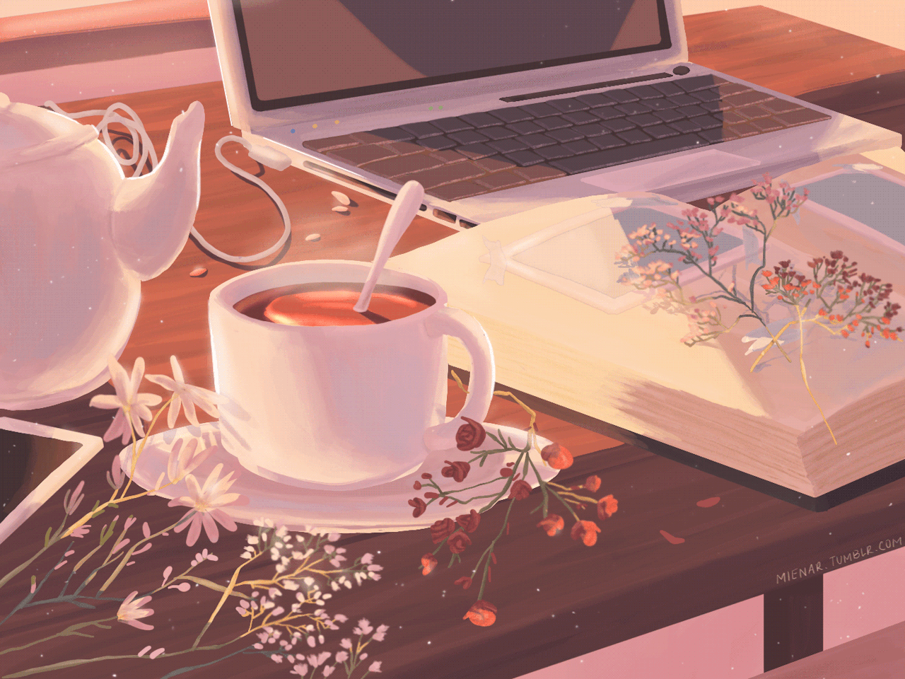
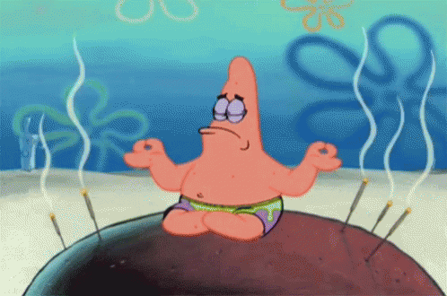

-
Iniciando a manhã
.gif)
Oiee Dudu zinho!
Lembro de você ter comentado sobre acordar com um lindo nascer do sol e um cafezinho quente, eu também acho isso incrível, começar o dia bem é uma ótima forma de ter um dia cheio de energia e progresso, queria compartilhar com você algumas coisinhas que gosto de fazer depois de acordar para começar o dia bem, e também falar sobre café, tem um cafezinho que eu sempre faço/tomo pela manhã que eu gosto bastante kkkk ^^
-
Banhozinho

Hora do banhozinho
Nada melhor doque tomar um banhozinho logo pela amanhã para despertar o nosso corpo e trazer as energias pra gente, essa é a primeira coisa que eu gosto de fazer logo quando acordo, tomar um banhozinho e de preferência geladinho.
-
Cafezinho
Hora do cafezinho
Essa horinha é muito boa, hora de preparar o café da manhã, gostaria de compartilhar com você Dudu, o cafezinho que eu mais gosto de tomar ^^, ele se chama cafezinho com leite, eu não sei se tem um nome certo para ele, mas basicamente é um café normal com um pouco de leite em pó, vou dar o passo a passo para você na próxima página caso tenha interesse em fazer também. ^^
-
Receita do cafezinho com leite
.gif)
Como preparar
Primeiro eu deixo a água esquentando enquanto vou preparando o cafezinho na caneca, no copinho você vai adicionar 1 colher pequena de café, na verdade depende da quantidade de água que você vai colocar no café, geralmente não gosto de um cafezinho muito forte, então eu encho uma caneca de água um pouco acima da metade, continuando, eu adiciono uma colher de café, 2 colheres de leite em pó, e 2 colheres de açucar e pronto, depois você coloca a água quente no café e mistura ele, é um cafezinho bem simples mas ao mesmo tempo muito bom. ^^
-
Meditação/Alongamento
Hora da Meditação/Alongamento
Eu estou começando a pegar o costume de acordar bem cedo para aproveitar mais o dia, e a Meditação e Alongamento são o tipo de coisa que sempre ouço muita gente recomendar, até o momento só faço alongamento, mas também estou pretendendo em começar a meditar para ver como funciona direitinho, acredito que possa ajudar bastante no estresse e ansiedade.
-
A vida

Estou aqui com você Dudu
A vida ela é bem complicada as vezes, a vida não é nada fácil, estou vendo que você está passando por bastante coisa ultimamente Dudu, mas eu queria dizer que você está indo muito bem, você está progredindo bastante, você é uma pessoa muito esforçada e esse seu esforço vai lhe recompensar muito no final Dudu, as coisas podem parecer um pouco parada por agora e talvez um pouco entediante também, mas queria dizer que a vida só está começando, tenho certeza que você ainda vai ver e conquistar muita coisa nesse mundo, tudo isso é só o começo e estou aqui para evoluir juntinho a ti tudo bem? Tenho muito orgulho de você Dudu, eu te amo muito! 💜💙🌹